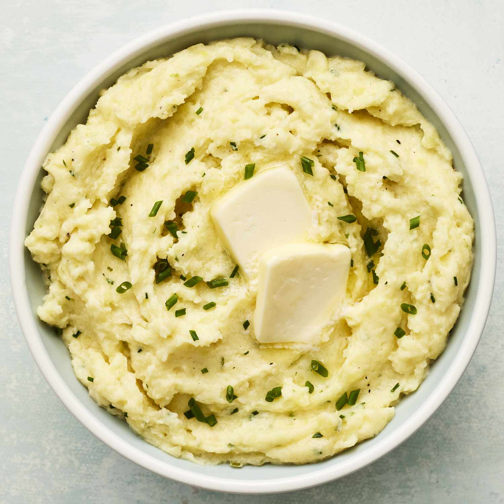

Basic Mashed Potatoes

Basic Mashed Potatoes
This a basic mashed potatoes recipe which involves the use of potatoes, milk, butter, and salt.
Ingredients
- 2 pounds baking potatoes, peeled and quartered.
- 3 cloves garlic, peeled, or to taste (Optional)
- 1 cup milk
- 2 tablespoons butter
- salt and ground black pepper to taste
Steps
- Bring a large pot of salted water to a boil. Add potatoes and garlic,
lower heat to medium, and simmer until potatoes are tender, 15 to 20 minutes.
- When the potatoes are almost finished, heat milk and butter
in a small saucepan over low heat until butter is melted.
- Drain potatoes and return to the pot. Slowly add warm milk mixture, blending it in with
a potato masher or electric mixer until potatoes are smooth and creamy. Season with salt and pepper.